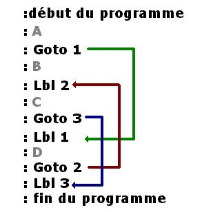
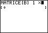

Si vous êtes au lycée, vous devez avoir une calculatrice scientifique. Et celui qui me dit qu'il n'a jamais joué dessus pendant un cours de maths est un menteur. Mais n'avez-vous jamais eu envie de programmer un programme de pompe... votre propre jeu sur votre Ti ?
C'est tout à fait possible grâce au Ti-Basic, langage spécifique aux calculatrices de Texas Instruments. Par le biais de ce tutorial, j'espère pouvoir vous apprendre tout ce qu'il faut pour écrire des petits jeux tout à fait acceptables.
Alors, lançons-nous ! ;)
P.S : j'aimerais remercier les zCorrecteurs & tout particulièrement ptipilou pour sa correction !!!
Avant de débuter la programmation, je vais d'abord commencer par vous parler de calculatrice Ti : à quoi elle ressemble, quelles sont ses caractéristiques,...
Et surtout vous décrire rapidement à quoi ressemble le Ti-Basic ! :D
Dans tout ce tuto, j'estimerai (et j'espère pour vous) que vous avez une Ti-83+. Si vous possédez une Ti-84, pas de problème. Mais pour tous ceux qui ont des Ti-82 ou Ti-82 Stats, il y a quelques fonctions qui ne sont pas gérées (mais j'essayerai de vous le préciser en temps voulu... ;) ). Voilà les caractéristiques d'une Ti 83+. Comme vous le voyez, ça n'équivaut pas à l'ordinateur en face de vous, mais c'est suffisant pour s'amuser pendant le cours de maths. :-°
Image
Caractéristiques
Caractéristiques TI-83+ :
Processeur : Zilog Z80 6 MHz
Mémoire : 24 Ko de mémoire RAM + 160 Ko de FLASH
Taille de l'écran : 64 x 96 pixels
Prix : environ 100EUR
Alimentation : 4 piles AAA
Les mémoires
C'est assez simple ! A la manière de votre ordinateur, une calculatrice possède plusieurs mémoires.
FLASH : on peut l'assimiler au disque dur de votre Ti, elle permet de stocker pas mal de données (enfin vous me direz, 160 Ko... :lol: ) : y sont stockés tous les programmes en Assembleur (langage plus complexe). Vous pouvez aussi y stocker des programmes en Ti-Basic, mais vous ne pourrez pas les lancer.
RAM : beaucoup plus petite, c'est elle qui va faire tourner votre Ti. Elle s'occupe de faire tous vos calculs. Toutes les données utiles y sont stockées : variables, programmes, courbes, ... Mais attention, cette mémoire doit être constamment alimentée en courant (voilà à quoi sert la pile au lithium), sinon sa mémoire est totalement vidée.
Les écrans
Vous pouvez voir que votre écran fait 94 * 62 pixels. Mais il peut fonctionner selon deux modes "différents".
L'écran texte
C'est celui qui apparaît au démarrage de votre Ti, et que vous utilisez le plus souvent. Vous avez sûrement remarqué que, quand vous tapez vos calculs, les nombres s'affichent par caractères à des positions bien précises. En fait, vous avez le droit de mettre 8 x 16 caractères sur l'écran texte. Une petite image pour expliquer ça. :)
Nous commencerons d'abord par étudier cet écran.
L'écran graphique
Vous avez (je pense) déja tracé des courbes de fonctions en maths. Vous avez alors vu une superbe courbe apparaître sur l'écran : cette fois-ci, l'écran n'est plus géré caractère par caractère, mais pixel par pixel (94x62). Cela vous permettra de faire des jeux un peu plus complexes, comme un serpent, ... ;)
Nous utiliserons cet écran dans la partie III.
Petits trucs à connaître
Votre Ti n'a qu'un nombre limité de touches, mais elle comporte beaucoup de fonctions et de menus à afficher. C'est pourquoi chaque touche possède souvent 2-3 actions possibles.
Prenons par exemple la touche [PRGM] (au milieu de la Ti). Vous remarquerez qu'elle comporte deux inscriptions au-dessus d'elle.
Draw : (en jaune) vous pouvez l'activer en appuyant au préalable sur [2nd] (la touche jaune), puis sur [PRGM] : vous tomberez alors sur le menu de dessin (il y aura un tuto, ne vous inquiétez pas :lol: ).
C : (en vert) on l'active cette fois-ci en appuyant sur [ALPHA] puis [PRGM] : la lettre C s'inscrit alors à l'écran.
Quand vous aurez envie d'écrire un petit texte avec les lettres, je pense que vous n'aurez pas envie de réappuyer sur [ALPHA] pour ajouter une lettre à chaque fois. Il y a un moyen de faire en sorte que [ALPHA] soit considéré comme toujours enfoncé. Pour cela, il vous suffit de faire [2nd]puis [ALPHA], une nouvelle pression sur [ALPHA] annulant le tout.
Le Ti-Basic est un langage de programmation dit "séquentiel".
Je vous explique. Quand vous commencerez à écrire votre code, vous allez écrire des instructions les unes à la suite des autres, un peu comme ça :) (n'écrivez pas sur votre Ti : ça ne marchera jamais :p ) :
X prend la valeur 0
Ajouter 5 à la valeur X
Si X est égal à 5
alors écrire BONJOUR à l'écran
sinon écrire AU REVOIR à l'écran
Que va alors faire votre Ti ? Elle demande au programme de se lancer. Il lit la 1ère ligne, exécute l'instruction, passe à la 2ème ligne, exécute l'instruction,... Il fait ça jusqu'à la dernière ligne et dit à la Ti : "c'est bon, j'ai fini !".
Le Ti-Basic est donc un code qui s'exécute ligne par ligneIl ne fait donc qu'une action à la fois.
Ce type de langage s'oppose à d'autres langages qui eux peuvent être multi-tâches (en anglais, multi-threading), c'est-à-dire qu'ils peuvent effectuer plusieurs processus (un ensemble d'instructions) de façon "quasi-simultanée".
Même s'il n'est pas très adapté pour faire de gros programmes (vous ne ferez pas de 3D avec :D ), le Ti-Basic est un excellent moyen de découvrir les bases de la programmation pendant les longues heures de maths (c'est grâce à ma Ti que j'ai découvert tout ce merveilleux monde :lol: ).
Mais le gros problème du Ti-Basic est sa lenteur. Il est assez compliqué de faire des jeux qui demandent pas mal d'actions, comme un jeu de combat par exemple. Mais pas de panique, c'est quand même pas mal du tout pour une Ti. Et ce défaut est rattrapé par le fait que ça soit un langage de haut niveau (la syntaxe du code se rapproche du langage courant en utilisant des instructions comme Repeat ou If permettant une meilleure compréhension du programme).
Instructions de contrôles
Pour ceux qui connaissent déja quelques syntaxes, sachez que le Ti-basic supporte :
l'assignation de valeurs à des variables grâce à la flèche ->
Les conditions : If, Else, et Then
les boucles : While, Repeat, For
les branchements : Goto et Lbl (je sais que c'est la hantise des programmeurs C)
Pour les autres, ne vous inquiétez pas : nous verrons tout ça plus tard !
L'Assembleur
La Ti-83+ permet aussi de programmer en assembleur, mais voilà à quoi ça ressemble ! (Ici, c'est un programme pour Ti-89, mais c'est équivalent)
Même si ce langage est beaucoup plus rapide et permet de faire plusieurs actions à la fois, il reste un langage de bas niveau (c'est-à-dire assez proche du langage du processeur), et il demeure très compliqué à apprendre. De plus, les bugs dûs à des erreurs dans des programmes en Assembleur sont assez fréquents.
C'est pourquoi je ne vais vous enseigner que le Ti-Basic ! :-°
Maintenant que vous savez tout ça, vous pouvez écrire votre premier programme :p . C'est par là...
Maintenant que vous connaisez un peu mieux votre Ti, on va pouvoir écrire notre premier programme (Enfin.... :p ). Comme dans tout bon tutoriel je vais vous apprendre à faire un magnifique "HELLO WORLD". Mais je vais aussi vous apprendre à "enregistrer" votre programme dans la ROM.
Vous allez voir, ce n'est pas très compliqué ^^ . Suivez les instructions.
Prendre sa Ti
Appuyez sur [ON]
Appuyez sur la touche [PRGM]
Puis deux fois sur flèche droite [>]
1: Create New (vous n'avez que cette option, de toutes façons)
La Ti vous demande alors d'entrer un nom pour votre programme : vous avez le droit à 8 caractères alphanumériques (ABC...XYZ + Têta + 0,1..8,9) en MAJUSCULES.
Validez, et là, "magie" votre programme est créé. :magicien:
Vous trouverez toutes ces commandes dans 3 menus que vous trouverez en appuyant sur [PRGM]. Disp est dans E/S, ligne 3. ClrHome est dans E/S, ligne 8.
N'oubliez pas de sautez une ligne en appuyant sur Enter ([^] pour remonter).
Voyons voir ce que ça affiche !
Ça marche très bien, on a réussi à afficher "Hello World" !
Oui mais c'est quoi ce Done qui traîne ? :euh:
C'est vrai ! La Ti affiche Done lorsque le programme est terminé. Pour éviter ce désagrément, rajoutez cette ligne de code (ne cherchez pas à comprendre tout de suite). La commande Output se trouve dans E/S, ligne 6.
Maintenant que vous avez créé votre programme et que vous êtes tout content, je suppose que vous n'avez pas envie de le perdre bêtement. :(
Eh oui, votre Ti est très capricieuse, et elle aime beaucoup faire des jolis RAM Cleared. Cela arrive la plupart du temps lorsque vous retirez les piles pendant que votre calculatrice est allumée (si un programme a planté par exemple...). Tous ce qui était sauvegardé dans la RAM est alors irrémédiablement perdu, surtout votre joli programme.
Alors pour éviter ça, nous allons enregister votre programme dans la mémoire FLASH. Tout d'abord, appuyez sur [2nd] puis [+] pour accéder au menu Memory. Ensuite, appuyez sur 2: Mem Mgmt/Del.
Vous voyez apparaître cet écran.
Les deux premières lignes vous renseignent sur la mémoire restante dans la RAM et l'ARC (la FLASH). La suite référence chaque élément contenu dans la Ti par catégorie. Pour les programmes, validez la ligne 7 (la ligne 1 permet d'accéder à tous les éléments contenus dans la Ti).
Vous avez maintenant sous les yeux la liste de tous les programmes de votre Ti, et à côté, la taille que prend chacun d'eux en mémoire. Mettez votre curseur devant l'un d'eux, et appuyez sur [ENTER]. Une étoile apparait devant : votre programme est placé dans la mémoire FLASH ! :p Il est archivé.
Avantages : Votre programme ne sera pas supprimé lors d'un RAM Cleared, et vous gagnez de la place en utilisant la FLASH pour stocker vos programmes, libérant ainsi la RAM qui doit lancer tous les calculs. Vu la taille de la mémoire FLASH, vous pouvez aussi stocker beaucoup plus de programmes sur votre Ti. Inconvénient : Vous ne pouvez plus lancer votre programme directement, il faudra penser à le désarchiver avant de l'utiliser.
Une nouvelle pression sur [ENTER] désarchive le programme : il revient alors dans la mémoire RAM.
Supprimer
C'est le même chemin, sauf qu'au lieu de [ENTER], on doit faire [DEL]. Un message de confirmation, et votre programme a disparu de la circulation.
Vous savez créer votre programme, on va maintenant parler des variables ! :D
Un élément incoutournable en programmation. C'est grâce à ça que vos programmes pourront devenir interactifs. On ne va quand même pas se contenter de n'afficher que du texte... :lol:
Et ne vous inquiétez pas, il n'y a pas besoin d'être super fort en mathématiques !
Une variable contient une information qui peut varier au cours du temps. En Ti-Basic, on ne peut stocker qu'une valeur numérique dans une variable. Elle vous permettra par exemple de stocker les scores d'un joueur, la surface d'un rectangle, le nombre de coups qu'il reste à jouer, ...
Une variable a donc :
un nom : il permet de la reconnaître, par exemple B.
une valeur : c'est l'information qu'elle contient. Allez, au hasard : 6 !
En Ti-Basic, voici comment on affecte (on donne) une valeur à une variable.
:6->B
La flèche donne instruction à la variable B de contenir (par exemple) la valeur 6.
Contrairement à des langages plus poussés, vous ne pouvez pas définir le nom de votre variable. Vous n'avez le droit qu'aux 26 caractères alphabétiques (de A à Z) + le Têta ([ALPHA] puis [3])
Pour afficher cette valeur, essayez ce code-ci.
:ClrHome
:6->B
:Disp B
Pour afficher la valeur de la variable, on a réutilisé la commande Disp mais, chose bizarre, il n'est pas affiché B, mais 6 ! o_O C'est normal, regardez : il n'y a pas de guillemets autour de la variable : elle affiche donc sa valeur.
:6->B
:Disp B // Ceci affiche 6
:Disp "B" // Ceci affiche B
L'intérêt des variables est tout de même de pouvoir effectuer des calculs, pour ensuite les stocker dans une variable pour pouvoir les utiliser ultérieurement ! :)
Comme je vous l'ai dit, il n'y a pas besoin d'être pointu en maths, il n'y a que 4 opérations de bases (si j'enlève les racines, cosinus, ...), c'est-à-dire :
Opération
Symboles
Addition
+
Soustraction
-
Multiplication
*
Division
/
Vous pouvez y accéder grâce aux 4 touches bleues (sans le Enter) à droite de votre Ti.
Autant démontrer par l'exemple...
:5+2->A // A vaut 7
:4/5->A // A vaut 0.8
:7*8->A // A vaut 56
:10-2->A // A vaut 8
Rien de bien compliqué, mais sachez qu'on peut aussi ajouter des variables.
:2->A
:3->B
:A+B->C // C vaut 5
:A+4-B->D // D vaut 3
Une variable peut très bien se modifier elle-même. Ce code marche ! ;)
:1->A
:2->B
:A+1->A // On augmente A de 1 (on incrémente)
:A-1->A // On diminue A de 1 (on décrémente)
:A/B->A // Et ici A vaut .5
Et n'hésitez pas à utiliser les parenthèses.
:5+3*2+5->A // La Ti fait d'abord 3*2, donc A vaut 16
:(5+3)*(2+5)->A // On commence par les additions, donc A vaut 56
Vous pouvez aussi utiliser les calculs plus complexes à votre disposition.
:cos(68)->A // calcule le cosinus de 68 (attention au mode Radian ou Degree)
:5²->B // Calcule le carré de 5
Voilà, ce n'est pas plus compliqué que ça !
Maintenant que vous êtes calés sur le sujet, on va étudier plus en profondeur comment gérer le texte à l'écran !
La première chose que je vais vous apprendre à faire en fait, ce n'est pas afficher du texte, mais l'effacer. o_O En effet, quand vous lancez votre programme, il y a souvent pas mal de texte qui traîne à l'écran, comme des calculs, ou même simplement la ligne "prgmSDZ". Donc : prenez la bonne habitude d'effacer votre écran en tout début de programme et à chaque fois que c'est nécessaire. ^^
Pour cela, utilisez la commande située dans le menu [PRGM] I/O ligne 3 :
:ClrHome
Disp
Vous connaissez déja bien cette commande, mais pas encore sur le bout des doigts. Quel est son principe de fonctionnement ?
Quand on lui demande d'afficher un texte, elle va voir l'écran, et lui demande quelles sont les lignes disponibles. En fait, elle écrit le texte demandé à la première ligne totalement vierge. Donc si vous avez déja écrit un calcul à l'écran, il l'affichera juste après (d'où l'intérêt d'effacer l'écran au préalable). Si l'écran est totalement plein, il décale tout d'une ligne vers le haut et écrit le texte.
Autre point important : n'écrivez pas plus de 16 caractères, sinon une partie du texte ne sera pas affiché, le retour à la ligne n'étant pas possible. Ce serait dommage, non ? :lol:
Je vous rappelle la syntaxe. entre " " : le texte brut sans " " : la valeur du calcul ou de la variable
:Disp "ABC" // Affiche ABC
:Disp "(4*5)+2" // Affiche (4*5)+2
:Disp (4*5)+2 // Là, on affiche 22
:5->A
:Disp A // on affiche la valeur de A soit 5
:Disp A+1 // Et A+1 soit 5
Si vous essayez, vous avez dû vous rendre compte que les textes s'alignent à gauche et les valeurs à droite. C'est normal et on ne peut rien y faire. :(
:Disp "RESULTAT:"
:Disp 5*6
Vous pouvez par contre "condenser" les commandes Disp en les séparant par une virgule. Par exemple, avec le code précédent.
:Disp "RESULTAT:",5*6
Un autre exemple pour bien comprendre. :)
:Disp "ABC"
:Disp "DEF"
:Disp "HIJ"
// Cela revient au même que...
:Disp "ABC","DEF","HIJ"
Le code s'écrira quand même sur 3 lignes.
Cette commande est assez simple à utiliser, mais elle devient obsolète pour des questions de mise en page. C'est pourquoi nous allons voir une deuxième commande pour afficher du texte.
Output(
Cette nouvelle commande permet d'afficher du texte là où vous voulez sur l'écran, sans vous soucier de ce qui est déja affiché. Elle prend en compte 3 paramètres (séparés par des virgules) :
le numéro de la ligne sur laquelle elle se situe
le numéro de la colonne sur laquelle elle se situe
le texte ou la variable à afficher
(Rappelez-vous, l'écran peut accueillir 8x16 caractères.)
Un exemple vaut mieux qu'un long discours :
:ClrHome
:Output(4,5,"D")
:Output(1,1,"A
(Les deux syntaxes sont équivalentes, la deuxième occupant moins d'octets.)
Les lignes sont numérotées de 1 à 8. La 1 étant la plus haute, et la 8 la plus basse. Les colonnes sont numérotées de 1 à 16. La 1 étant la plus à gauche, et la 16 la plus à droite. Evitez de mettre des valeurs qui ne soient pas situées dans ces plages. Vous n'aurez le droit qu'à un joli message d'erreur. :lol:
Vous avez tout à fait le droit à des variables (c'est là que ça devient marrant pour faire des petits jeux) :
:ClrHome
:1->X
:2->Y
:Output(X,Y,"A"
:4->B:5->C // Cette syntaxe est possible. Elle est équivalente à 2 lignes.
:Output(B,C,"E"
Bien sûr, on peut afficher des textes un peu plus longs, les coordonnées étant celles du premier caractère. On peut afficher aussi les valeurs des variables comme pour Disp.
Vous savez afficher du texte, mais un programme se doit quand même d'être interactif, de communiquer avec l'utilisateur. On peut par exemple lui demander d'entrer une valeur. :) Nous allons voir pour ça deux nouvelles commandes.
Prompt
La syntaxe n'est pas très compliquée à retenir.
:Prompt A
La commande Prompt se situe dans [PRGM], I/C, ligne 2. Vous écrivez ensuite le nom de la variable à laquelle vous voulez affecter la valeur entrée par l'utilisateur. Rien d'autre ! Et voilà le résultat !
Le programme affiche le nom de la variable, un = et un ?. A partir de ce moment, elle attend qu'une valeur soit rentrée pour continuer. Le programme n'exécute donc plus aucune opération.
C'est bien joli, mais c'est pas très beau ce A=?. C'est vrai ! C'est pour cela que j'utilise quasiment tout le temps la deuxième commande. :D
Input
Essayez ce code. (Input se trouve dans [PRGM], I/C, ligne 1)
:Input A
Pas bien plus joli, me direz vous. Mais essayez plutôt ce code là, en fait.
:Input "ENTER A: ",A
C'est mieux comme ça, non ? Il suffit d'abord d'écrire un texte entre guillemets, une virgule, puis la variable qui doit être modifiée. Ça permet une meilleure présentation de votre programme.
Voilà. Je n'ai pas à m'étendre davantage là-dessus.
Bon, c'est bien beau tout ça. Vous avez appris plein de trucs, mais il va falloir mettre tout ça en pratique. ^^
Je vous propose de créer un petit programme tout simple : calculer la surface d'un rectangle. Pas compliqué ! Je rappelle quand même la formule, pour ceux qui auraient un trou de mémoire : Surface = Longueur x Largeur.
Je vous laisse réfléchir. En-dessous, je vous propose deux solutions, pour bien vous montrer qu'on peut coder de différentes manières plus ou moins bonnes.
Cette fois-ci le résultat est aligné avec le =, c'est en fait à vous de jouer avec les Output et les Disp pour trouver la meilleure solution. Petit détail, je n'ai pas utilisé de variable C, j'ai directement fait le calcul dans le Output.
A vous de trouver la solution pour créer un programme rapide, joli à regarder et pas trop lourd en place ! :D
Chapitre suivant : Les conditions. Suivez le guide ! ^^
Les conditions, c'est un chapitre incoutournable. C'est grâce à ça qu'on pouvoir complexifier un peu nos programmes. Alors ne passez pas à côté de ce chapitre ! ;)
A quoi servent les conditions ? Tout simplement à tester les valeurs des variables, pour ensuite effectuer différentes actions en fonction de leur statut.
Un exemple de la vie courante pour expliquer tout ça.
Citation : Situation
Je sors de chez moi. Quelle température fait-il ? SI il fait moins de 20°C, je prends mon manteau. SI il fait plus de 20°C, je prends mes lunettes.
Le mot important ici est le SI, c'est l'instruction de base pour les conditions. Sur votre Ti, l'instruction s'appelle If. Vous la trouverez dans [PRGM], CLT, ligne 1.
:If
Il faudrait quand même tester quelque chose non ? :lol: Pour tester une valeur de variable, vous avez à votre disposition 6 outils que vous trouverez en faisant [2nd] + [MATH], que vous retrouvez ici :
Symbole
Signification
=
est égal à
!=
est différent de
>
est supérieur
>
est supérieur ou égal à
<
est inférieur à
<
est inférieur ou égal à
Par exemple,
:5->A
:If A>5
:If A=5
:If (A+1)<5
Ce code ne fait rien, et c'est normal ! :p Il faut déterminer les actions que devra exécuter le programme en fonction du résultat du test. Pour cela, on utilise deux autres commandes : Then et End, que vous trouverez dans [PRGM], Clt, ligne 2 & 7. Voici la syntaxe:
:If [Condition]
:Then
://[Exécution des lignes comprises entre Then et End]
:End
Ce n'est pas plus compliqué que ça ! :) (Remarquez qu'il y a quand même une petite erreur. Essayez d'entrer 20 pour voir. Le cas n'est pas pris en compte.)
Si jamais vous voulez effectuer uniquement une seule action après le If, vous pouvez ignorer le Then et le End. Le programme ne prendra alors en compte que la ligne suivante.
:6->A
:If A<5
:Disp "BONJOUR" // n'écrit pas cette ligne
:Disp "AU REVOIR" // mais celle-là, oui !
Reprenons la situation que j'avais décrite en début de chapitre, et tentons de l'écrire d'une autre façon.
Citation : Situation
Je sors de chez moi. Quel température fait-il ? SI il fait moins de 20°C, je prends mon manteau. SINON je prends mes lunettes.
Cette fois-ci, on a utilisé le mot SINON. Si la condition introduite par le Si est fausse, c'est qu'il fait plus de 20°C, donc on prend ses lunettes. :soleil:
SINON permet d'exécuter une partie de code si la condition testée n'est pas réalisée. (En anglais, Sinon se traduit par Else.) Vous le trouverez dans [PRGM], Clt, ligne 3. Utilisez-le de cette manière :
:If [Condition]
:Then
://[Code exécuté si la condition est VRAIE]
:Else
://[Code exécuté si la condition est FAUSSE]
:End
On peut maintenant réécrire le code de tout à l'heure d'une autre manière.
Opérateurs ? Logiques ? Qu'est-ce ça peut bien être, ça ? :euh: C'est ce qui permet de tester plusieurs conditions à la fois !
Par exemple,
Citation : Situation
- Je sors s'il fait beau ET s'il fait plus de 20°C. - Je ne sors pas s'il fait moins de 20°C OU s'il pleut.
On a utilisé un mot (une conjonction de coordination) pour pouvoir réunir 2 conditions. Et c'est exactement la même chose en Ti-Basic, les opérateurs logiques sont disponibles en faisant [2nd] puis [MATH] puis [>] (Logic). Ils sont au nombre de 4.
Imaginons 2 conditions A et B avec deux états possibles (Vrai et Faux), relié par un opérateur AND qui influent sur le test réalisé S (qui peut être Vrai ou Faux).
A
B
S
Faux
Faux
Faux
Faux
Vrai
Faux
Vrai
Faux
Faux
Vrai
Vrai
Vrai
Le test est donc réalisé seulement si les deux conditions sont réalisées (ET).
:If A=5 and B>3
:Disp "BONJOUR"
Pour afficher Bonjour, A doit être égal à 5 ET B supérieur à 3.
:If A>10 and A<20
Si A est compris entre 10 et 20 (non compris).
or
A
B
S
Faux
Faux
Faux
Faux
Vrai
Vrai
Vrai
Faux
Vrai
Vrai
Vrai
Vrai
Le test est réalisé seulement si une des deux conditions est réalisée (OU).
:If A=4 or B=5
Si A est égal à 4 OU B est égal à 5.
xor
A
B
S
Faux
Faux
Faux
Faux
Vrai
Vrai
Vrai
Faux
Vrai
Vrai
Vrai
Faux
Le test est réalisé seulement si une des deux conditions est réalisé ("OU" exclusif).
:If A=5 xor C=3
Si A est égal à 5, et si C est différent de 3, ou si A est différent de 5, et C est égal à 3 (compliqué non ? :lol: ).
not(
Cette fois-ci, on n'a qu'une condition.
A
S
Faux
Vrai
Vrai
Faux
Le notinverse la condition testée : si elle est fausse, elle devient vraie; si elle vraie, elle devient fausse.
:If not(C=6) // Si C n'est pas égal à 6.
:If C != 6 // peut aussi s'écrire comme ça.
(N'écrivez pas "!" puis "=", mais bien le symbole "différent de" dans Logic)
Encore plus de conditions
Nous avons déja lié deux conditions ensemble. Mais vous pouvez en utiliser plusieurs dans un même test, en utilisant plusieurs opérateurs logiques. Par exemple :
:If A=5 and B=5 and C=7
Mais faites très attention aux comportements de vos tests s'ils comportent des opérateurs logiques différents, et n'hésitez pas à utilisez des parenthèses pour donner la priorité à certaines conditions. Regardez ce test et sa table de vérité.
:If A=1 and B=1 or C=0
A
B
C
S
Faux
Faux
Faux
Vrai
Faux
Faux
Vrai
Faux
Faux
Vrai
Faux
Vrai
Faux
Vrai
Vrai
Faux
Vrai
Faux
Faux
Vrai
Vrai
Faux
Vrai
Faux
Vrai
Vrai
Faux
Vrai
Vrai
Vrai
Vrai
Vrai
Rajoutons des parenthèses.
:If A=1 and (B=1 or C=0)
A
B
C
S
Faux
Faux
Faux
Faux
Faux
Faux
Vrai
Faux
Faux
Vrai
Faux
Faux
Faux
Vrai
Vrai
Faux
Vrai
Faux
Faux
Vrai
Vrai
Faux
Vrai
Faux
Vrai
Vrai
Faux
Vrai
Vrai
Vrai
Vrai
Vrai
Comme quoi, il est assez difficile de prévoir le comportement d'un test. C'est parfois pratiquement impossible. Essayez par exemple de savoir comment va se comporter un test de cette forme-là : :lol:
:If [c1] xor [c2] xor [c3] xor [c4]
Je vous propose un petit exercice. Ecrivez le test :If A=5 xor C=3 seulement avec des AND et des OR.
Jusqu'à présent, les programmes que nous avons écrits s'éxecutent linéairement. Ils commençent à la première ligne du code et lisent chaque ligne les unes après les autres jusqu'à la dernière sans retour en arrière.
Eh bien, il est possible de "boucler" un programme, c'est à dire de pouvoir re-éxecuter plusieurs fois une même partie du programme grâce à trois instructions : While, Repeat & For.
Si vous êtes un peu anglophone, vous avez compris que While voulait dire "Tant que". L'intérêt de cette boucle est d'exécuter une partie du code tant qu'une condition est vraie. Si elle est vraie, on recommence. Par contre si elle devient fausse, on exécute le code situé après la boucle.
Citation : Situation
Tant que ça ne fait pas 10 minutes que j'attends Je reste à l'arrêt de bus. Refaire Je m'en vais.
Voilà pour la mise en situation. En Ti-Basic, cette boucle s'écrit avec deux instructions :
While : [PRGM], Clt, ligne 5. C'est lui qui marque le début de la boucle.
End : [PRGM], Clt, ligne 7. Pour définir la fin de la boucle.
:While [Condition]
: // Code à exécuter dans la boucle
:End
: // Code à exécuter après la boucle
Que se passe-t-il dans ce code ? ^^ On efface l'écran et on met la variable A à zéro. On entre dans la boucle, elle s'exécutera tant que A est inférieur à 6. Si jamais A est supérieur ou égal à 6, la boucle s'arrête. On affiche la valeur de A (ici 0). On ajoute 1 à A. On arrive à la fin de la boucle (End) et on remonte au niveau du While. On affiche la valeur de A (ici 1). On ajoute 1 à A. On arrive à la fin [...] On continue ainsi jusqu'à ce que A soit égal à 6. A ce moment-là, le programme sort de la boucle, affiche la ligne "FIN" et termine le processus.
Les applications de cette boucle sont multiples. Par exemple, si vous voulez qu'un utilisateur entre une valeur, mais qu'elle soit obligatoirement différente de 0, vous pouvez vérifier cette valeur avec une boucle While, pour redemander à l'utilisateur d'entrer une valeur en cas d'erreur.
Le If vérifie la valeur de A. Si la valeur entrée est bonne, on passe la variable V à 1 pour finir l'exécution de la boucle. Par contre si A vaut 0, alors V reste à 0 et la boucle continue à s'exécuter, demandant une nouvelle fois l'entrée d'une valeur. N'oubliez pas de déclarer la variable utilisée dans le While avant de lancer la boucle ! :)
Moins utilisée, cette boucle est semblable à While. La syntaxe est équivalente. On la trouve dans [PRGM], Clt, ligne 6.
:Repeat [Condition]
: // Code à exécuter dans la boucle
:End
La boucle se répète jusqu'à ce que la condition soit vraie. Elle s'exécute donc tant que la condition testée est fausse.
De plus, le test n'est pas effectué au début, mais à la fin de la boucle, de sorte que le code situé dans la boucle soit exécuté au moins une fois.
:ClrHome
:0->A
:Repeat A=6
:Disp A
:A+1->A
:End
A débute à 0. On affiche une première fois la valeur de A, et on ajoute 1 à A. Le test est effectué : A ne vaut pas 6, on recommence la boucle. On continue ainsi jusqu'à ce que A soit égal à 6. A ce moment-là, le programme sort de la boucle.
Cette dernière boucle fonctionne en incrémentant ou en décrémentant une variable.
La boucle s'écrit ainsi.
:For(variable,départ,arrivée[,incrément]
: // La boucle
:End
variable : c'est la variable qui va être utilisée dans la boucle.
départ : c'est la valeur à laquelle la variable va démarrer au début de la boucle.
arrivée : c'est la valeur à laquelle la variable doit s'arrêter.
incrément : il n'est pas indispensable, c'est la valeur qui sera rajoutée à la variable à chaque tour de boucle ; elle peut être positive, ou bien négative. S'il n'est pas précisé, il est défini à 1 (on rajoute 1 à la variable à chaque boucle).
:ClrHome
:For(X,1,16
:Output(1,X,"A"
:End
On affiche des A sur toute une ligne. A chaque tour de boucle, X va augmenter de 1 (valeur par défaut) : 1, 2, 3, ..., 15, 16, remplissant ainsi toute une ligne.
Essayons autre chose : affichons des A sur tout l'écran ! Pour cela, il vous faut deux variables et deux boucles qu'il faudra imbriquer. :) Je vous laisse essayer.
Bien, vous avez maintenant vu pas mal de notions : texte, variable, boucles, conditions,... Et je pense que le mieux est de résumer tout ça dans un grand TP qui vous fera réviser tout ça !
Alors aujourd'hui je vous propose un grand classique : le jeu du plus ou moins
Le principe du jeu du + ou - est très simple ! La calculatrice va choisir un nombre au hasard compris entre 0 et 100 par exemple. L'utilisateur doit trouver en un minimum de coups le nombre mystère, la Ti lui disant si son approximation est supérieure ou inférieure au nombre mystère. ;)
Ça donnera quelque chose dans ce style :
Choisissez un nombre entre 1 et 100 : 59
C'est moins !
Choisissez un nombre entre 1 et 100 : 32
C'est plus !
Choisissez un nombre entre 1 et 100 : 43
C'est plus !
Choisissez un nombre entre 1 et 100 : 48
Vous avez trouvé le nombre mystère !
Première question que vous devez vous posez : combien de variables dois-je utiliser ? Faisons la liste.
A : c'est le nombre aléatoire choisi par la Ti.
C : le choix de l'utilisateur
M : la valeur maximum que peut prendre le nombre aléatoire
N : la valeur minimum que peut prendre le nombre aléatoire
Un nombre aléatoire ? Comment on fait ça ? o_O
C'est vrai, je ne vous l'ai pas appris. En annexe, j'ai rédigé un tuto qui s'appelle "le bouton [MATH]", où vous trouverez toutes les informations sur les nombres aléatoires. Mais dans ma grande bonté, je vous remets le code. :lol:
:randInt(1,10->A
A va prendre une valeur comprise entre 1 et 10. Il vous suffit de changer les valeurs si vous voulez prendre une plage de nombres plus grande.
La structure du programme
C'est très important : réfléchir avant de coder. Il faut penser à faire le schéma général de son programme : les boucles, les conditions, ... A ce niveau, cela peut paraître inutile, mais à partir du moment où vous ferez des programmes un peu plus gros, c'est indispensable pour ne pas se mélanger les pinceaux. ;)
Je vous donne une petite solution que j'ai écrite :
Citation : Lanfeust 313
Assigner les valeurs aux variables Tant que le nombre mystère n'est pas égal au choix de l'utilisateur.
Demander le choix. Si le choix est supérieur au nombre mystère, Alors écrire "MOINS" à l'écran. Si le choix est inférieur au nombre mystère, Alors écrire "PLUS" à l'écran.
Fin écrire "GAGNE" à l'écran.
Vous avez tous les éléments en mains pour écrire ce programme. A vous de jouer ! :)
Vous me direz qu'utiliser M et N est totalement inutile. Vous avez parfaitement raison ! :) Mais il peuvent vous aider à améliorer votre programme : vous pouvez ainsi demander à l'utilisateur entre quelles valeurs doit être compris le nombre mystère.
J'ai d'autres idées d'améliorations :
Réaliser un compteur de coups. Par exemple : "Vous avez gagné en 5 coups"
Demander à l'utilisateur s'il veut rejouer
Et pourquoi pas un mode 2 joueurs ?
Je vous rappelle que ma solution n'est pas absolue, vous pouvez avoir construit votre programme de façon totalement différente. ;)
On a donc vu comment on pouvait créer un programme un peu plus conséquent. Si vous définissez bien ce que vous faites, quels variables vous utilisez, et la structure générale de votre programme, alors c'est tout bon :p . C'est comme ça qu'on écrit des bon codes.
Maintenant à vous d'écrire vos propres programmes. Je suis sûr que vous êtes bouillonant d'idées. Allez quelques exemples :
Un convertisseur Francs/Euros
Un programme pour calculer une moyenne
Calculer les solutions d'un polynôme
[...]
Bien maintenant on passe aux choses sérieuses, on attaque la partie II ! Vous allez en baver ! :diable:
Pour faire ce type de boucles, nous avons besoin de deux instructions, en fait :
Goto : [PRGM] + CTL + 0
Lbl : [PRGM] + CTL + 9
Le principe de ces instructions est très simple : elles marchent par paires.
Un Goto permet de passer directement à la ligne d'instruction d'un Label.
Mais si on a plusieurs Goto et Labels, comment fait-on pour les différencier ? o_O
C'est très simple : chaque Goto et Label doit être associé à un indice (un chiffre allant de 0 à 99 ou une lettre allant de A à Z + le têta). Voilà la syntaxe :
:Lbl [indice]
:Goto [indice]
Par exemple :
:Lbl 15
:Goto 15
Mais je crois que le mieux est de sortir un joli schéma pour expliquer tout ça ! :D

Commentons ce code point par point : :)
le programme commence
Le code situé en A est exécuté
On rencontre le goto 1 qui nous emmène au label 1 (flèche verte)
D est exécuté
On rencontre le goto 2 qui nous emmène au label 2 (flèche rouge)
C est exécuté
On rencontre le goto 3 qui nous emmène au label 3 (flèche rouge)
Le programme se termine
Exemple
Un premier exemple concret : comment sortir d'une boucle While en plein milieu ? ... Avec un Goto, bien sûr ! :p
:0->A
:While 1 // une boucle infinie ! A bannir ou à utiliser avec précaution
:Disp "COUCOU"
:If A=4:Goto 1
:Disp "COUCOU 2"
:A+1->A
:End
:Lbl 1
:Disp "FIN"
:Output(1,1,"
Quand A est égal à 4, alors on sort de la boucle pour aller jusqu'au label 1. le "COUCOU 2" ne s'affiche pas, mais le texte "FIN" s'affiche !
Contre-exemple
Même si les Goto peuvent sembler très pratiques, je vous conseille d'abord de vous habituer à utiliser les While, qui sont souvent moins lourds. :)
:Lbl A
:Disp "TEST"
:If A=B:Goto B
:Goto A
:Lbl B
:Disp "FIN"
// Ce code équivaut à celui-ci !
:Repeat A = B
:Disp "TEST"
:End
:Disp "FIN"
La sentence est sans appel ! Le Repeat est plus pratique, plus lisible et moins lourd ! :D
Bien ! Je vais vous poser un autre problème : si vous me codiez un joli menu ? Avec une jolie liste et plein d'options... :p Compliqué, non ?
Eh bien, votre Ti vous propose une fonction tout prête pour faire ça, et elle marche avec les Goto ! C'est la fonction Menu.
Et voilà ce que ça donne ! Pas mal non ? ;)
Vous trouverez le menu en faisant [PRGM] + CLT + C. Ce qu'il faut savoir, c'est que chaque choix (numéroté de 1 à 7) est associé à un label. Quand vous choisissez une option en utilisant les flèches directionnelles et Enter, vous allez sauter directement à un label bien déterminé. :)
Pour écrire le menu, il faut d'abord indiquer son titre entre guillemets, puis pas plus de 7 fois : un nom d'option entre guillemets puis un label associé à cette option.
:Menu("MENU DU SDZ","CHOIX 1",A,"CHOIX 2",B,"CHOIX 3",15
:Lbl A
:Disp "CHOIX 1"
:Goto 99
:Lbl B
:Disp "CHOIX 2"
:Goto 99
:Lbl 15
:Disp "CHOIX 3"
:Lbl 99
:Disp "FIN"
Exercice
Allez : un petit exo tout simple. Ecrivez un programme (contenant un menu) permettant de calculer la surface de plusieurs figures géométriques.
A vos Ti... :p
Et voici la correction (je n'ai fait que 2 figures, à vous de rajouter les autres). Notez l'apparition de l'instruction Pause ([PRGM]+Clt+8), qui permet de mettre le programme en pause jusqu'à l'appui d'une touche.
Ce chapitre est vraiment très intéressant pour créer des mini-jeux puisque je vais vous apprendre à utiliser les touches de votre Ti. Vous pourrez donc utiliser la touche enter, les flèches,... pour interagir avec vos programmes
Le principe est très simple ! :D Il faut utiliser la fonction Getkey qui, à la pression d'une touche, va enregistrer un nombre correspondant à la touche enfoncée dans une variable.
Question n°1. Mais quelle valeur est enregistrée dans la variable ?
Un nombre compris entre 11 et 105. Ce schéma illustre bien la valeur de chaque touche de votre Ti. Vous pouvez remarquer qu'elle est organisée en lignes et en colonnes.
Les lignes sont numérotées de haut en bas. Elles vont de 1 à 10 et correspondent aux dizaines. (Les flèches haut, gauche, droite sont sur la ligne 2 & La flèche bas est sur la ligne 3.)
Les colonnes sont numérotées de gauche à droite. Elles vont de 1 à 5 (6 pour la flèche) et correspondent aux unités.
Question n°2. Comment utilise-t-on ce "Getkey" ?
Vous trouverez la fonction Getkey en faisant [PRGM]+ I/O + 7. Ensuite, il vous faut choisir une variable dans laquelle vous allez stocker la valeur de Getkey. Tentez de garder toujours la même le long d'un programme, et de ne l'utiliser que pour ça. D'ailleurs, par habitude, je n'utilise que la variable K pour utiliser le Getkey.
Voici la syntaxe (on ne peut pas faire plus simple :D ) !
:getKey->K
A chaque fois que le programme rencontrera cette ligne, il enregistrera une valeur dans K, si une touche est enfoncée (ou 0, si rien n'est enfoncé). Ensuite, vous pouvez manier K comme n'importe quelle variable !
On utilise souvent les Getkey avec une boucle !
:Repeat K != 0 //(!= veut dire non égal)
:getKey->K
:End
:Disp K
Le programme attend la pression d'une touche pour ensuite donner sa valeur (utile non ? ^^ ).
On ne va pas arrêter là ce tuto. Je vous propose un petit exercice que je vais vous commenter pas à pas. ^^
Grâce à ce que nous venons d'apprendre, je vais vous montrer comment déplacer un caractère sur l'écran texte, grâce aux flèches. (Essayez si vous le voulez une fois avant de regarder la correction.)
1er code
Tout d'abord, j'ai besoin d'effacer l'écran et d'initialiser mes variables. Je vais en avoir besoin de 3 pour le moment :
X : coordonnée du caractère sur la longueur
Y : coordonnée du caractère sur la largeur
K : le Getkey
Je dois aussi mettre en place la boucle dans laquelle va se dérouler le programme. Mais passons au code !
Vous avez remarqué que si vous tentez de sortir de l'écran, vous avez simplement droit à un joli arrêt du programme. Il faut gérer ça en empêchant X et Y de dépasser certaines valeurs. Et on va le faire à grands renforts de If ! :D
:ClrHome
:1->X:1->Y
:Repeat K=105
:Output(Y,X,"+"
:getKey->K
:If K=24:X-1->X
:If K=26:X+1->X
:If K=25:Y-1->Y
:If K=34:Y+1->Y
:If X=0:1->X // le bord gauche
:If X=17:16->X // le bord droit
:If Y=0:1->Y // le bord du haut
:If Y=9:8->Y // le bord du bas
:End
Derniers bugs
Vous avez sûrement remarqué que le + laisse une grosse traînée derrière lui. :-° On va s'occuper de ça ! :)
A chaque tour de boucle, on doit d'abord enregistrer les coordonnées X et Y avant de les modifier. On peut ainsi effacer leurs anciennes positions avant de les placer à leurs nouvelles. Pour cela, il nous faut 2 nouvelles variables. Pourquoi pas A et B ?
:ClrHome
:1->X:1->Y
:1->A:1->B
:Repeat K=105
:Output(A,B," " // il faut mettre un espace vide
:Output(Y,X,"+"
:Y->A:X->B // on enregistre avant modification
:getKey->K
:If K=24:X-1->X
:If K=26:X+1->X
:If K=25:Y-1->Y
:If K=34:Y+1->Y
:If X=0:1->X
:If X=17:16->X
:If Y=0:1->Y
:If Y=9:8->Y
:End
Optimisation(s)
Je vais vous apprendre une astuce pour économiser quelques octets dans votre programme. On peut réduire la taille des conditions pour le déplacement. :)
J'espère que vous avez compris comment on se sert des Getkey .
Le programme qu'on a écrit est simple, mais à la base de beaucoup de jeux (vous retrouverez ce principe si vous faites un Snake).
J'ai aussi énoncé un principe important : l'optimisation. Quand on a fini d'écrire un programme, l'important est de bien le relire pour voir si on ne peut pas faire plus simple, ou plus court à un endroit, utiliser moins de variables, ... Ainsi votre programme sera plus léger en place, plus rapide, plus simple à modifier ! Que des avantages, quoi ! :D
C'est tout ce que j'avais à dire sur ce chapitre ! :)
En Ti-Basic, les chaînes de caractères sont donc des espaces où l'on peut stocker un ou plusieurs caractères (vous vous en doutiez non ? ^^ ). Vous pouvez ainsi enregistrer des noms, des lieux, ... comme "BERTRAND", "LAMPADAIRE" ou "123AZERTY"
La Ti vous fournit 10 chaînes, pas plus, pas moins ! Elles sont numérotées de Str0 à Str9. Vous pouvez y accéder en faisant [VARS]+7.
Vous avez trois manières différentes de récupérer une chaîne de caractères :
Bon : on sait initialiser une chaîne & l'écrire, mais on pourrait aller un peu plus loin, non ? :p Je vais vous montrer plusieurs fonctions qui permettent de faire ce que vous voulez de vos chaînes.
length(
Les anglophones ont dû deviner que cette fonction renvoie la longueur de la chaîne.
:"ABCD"->Str8
:length(Str8)->L
:Disp L
4
sub(
Cette fonction renvoie une chaîne qui est une partie de la chaine initiale : on appelle ça une sous-chaîne. début est le numéro de position du premier caractère de la sous-chaîne. taille est le nombre de caractères de la sous-chaîne.
Cette fonction renvoie la position dans la chaîne initiale du premier caractère de la sous-chaîne. :) début est facultatif : il indique la position du premier caractère de la chaîne où la recherche doit commencer (sa valeur par défaut est 1).
:inString(chaîne,sous-chaîne[,début]
:inString("BONJOUR","JOUR")->A
:Disp A
4
2ème exemple, avec le paramètre facultatif :
:inString("ABCABC","ABC",4)->Str2
Str2 contient donc "ABC" (les 3 dernières lettres de la chaîne). ^^
expr(
Je crois que cette fonction est la plus intéressante ! ;) Elle permet de convertir une chaîne de caractères en expression, pour ensuite l'exécuter.
:expr(chaîne
Pas clair ? :o Je m'explique : imaginons que Str1 vaut "3X" et que X vaut 4. Si j'utilise expr(, alors 3X sera transformé en 3*4, et le calcul sera effectué.
:"3X"->Str1
:4->X
:expr(Str1)->A
:Disp A
12
On peut donc demander à l'utilisateur de rentrer une fonction contenant une inconnue, et une valeur de l'inconnue (bien sûr, dans ce cas, la fonction devra contenir X :D ).
:Input "Y=",Str1
:Input "X=",X
:expr(Str1)->A
:Disp A
Un autre exemple (tiré d'un problème du forum). Pour un programme, on a besoin de connaître le nombre de caractères que fait un nombre avant de le manipuler. Comment faire ? C'est simple ! ^^
:"12345"->Str1
:length(Str1)->A
:expr(Str1)->B
A contient donc la taille du nombre, soit 5, & B contient quand à lui la valeur 12345.
String>Equ(
Cette fonction permet de convertir une chaîne en équation. :D
:String>Equ(chaîne,Yn // n est l'indice de l'équation
En fait, quand je dis équation, je parle de celles qui permettent d'afficher des courbes sur votre écran graphique. Elles sont numérotés de Y0 à Y9. Vous les trouverez en faisant [VARS]+[Y-VARS]+1.
:String>Equ("3X+2",Y2
Vous pouvez vérifier que votre équation a bien été ajoutée en faisant [Y=] (en haut). Vous pouvez ensuite admirer la courbe créée en faisant [TRACE] ou [GRAPH]. ^^
Equ>String(
C'est tout simplement le contraire de la fonction du dessus. On passe d'une équation à une chaîne. :)
:Equ>String(Yn,Strn // n pouvant aller de 0 à 9
:"3X+2"->Y1
:Equ>Str(Y1,Str4
Str4 vaut donc bien "3X+2". :D
Un autre exemple (tiré d'un problème du forum): Pour un programme, on a besoin de connaitre le nombre de caractère que fait un nombre avant de le manipuler. Comment faire ? C'est simple ! ^^
:"12345"->Str1
:length(Str1)->A
:expr(Str1)->B
A contient donc la taille du nombre soit 5 & B contient quand à lui la valeur 12345.
C'est très simple : c'est un ensemble contenant un nombre variable de nombres. Chaque nombre contenu dans la liste est repéré par un indice (un nombre appartenant aux entiers naturels).
Mais je crois qu'un schéma parle mieux que des mots. ^^ (i: indice // v: valeur)
Le premier indice de la liste est contenu à l'indice 1 : il vaut 12. Le deuxième indice est contenu à l'indice 1+1 soit 2 : cette fois-ci, il vaut 3. On peut continuer ! :D Indice suivant : 3 & il vaut 74...
Je pense que vous avez compris le principe. On peut en quelque sorte dire qu'une liste est une sorte d'étagère où chaque rangement peut contenir une variable. Et pour ne pas s'y perdre, on a collé une étiquette à chaque emplacement.
Mouais... Et à quoi ça sert ?
C'est trop divers et varié pour tout lister. En créant des programmes, vous vous apercevrez que vous ne pourrez pas y couper, à partir du moment où vous devez manipuler un grand nombre de variables. On peut s'en servir pour enregistrer des scores, retenir les coordonnées du serpent de Snake, ou enregistrer plusieurs nombres entrés par l'utilisateur, etc.
Je pourrais continuer pendant des heures, mais là n'est pas le sujet. Vous trouverez bien à un moment l'utilité de ces tableaux, alors pour le moment je vous laisse lire ce chapitre. Vous verrez, ce n'est pas trop dur ! ^^
C'est bien beau, mais comment on crée une liste ? :o
J'y viens ! :)
La Ti vous fournit exactement 6 listes prêtes à l'emploi. Elles sont numérotés de L1 à L6. Vous pouvez y accéder en faisant [2nd]+[1] pour la liste 1, [2nd]+[2] pour la liste 2, ..., [2nd]+[6] pour la liste 6. Vous pouvez aussi faire [2nd]+[STAT].
Il faut maintenant entrer des valeurs dans cette liste. Vous pouvez le faire à l'initialisation en utilisant les crochets: [2nd]+[(] et [2nd]+[)]. Chaque chiffre doit être séparé d'un autre par une virgule. Et on réutilise notre fameuse flèche STO. :D
:{12,3,74,5,23,10,59}->L1
:Disp L1
Comment on utilise les éléments de cette liste ?
C'est là qu'interviennent les indices. Si vous voulez accéder à une valeur précise, il va falloir préciser l'indice correspondant. Pour cela, il suffit d'écrire le nom de la liste suivi de l'indice entre parenthèses.
:{7,8,9}->L1
:Disp L1(1)
:Disp L1(2)
:Disp L1(3)
7
8
9
Si vous demandez une valeur qui n'existe pas, vous vous retrouverez avec une erreur "ERR:INVALID DIM" :(
Vous pouvez ensuite modifier chaque variable indépendamment des autres. :)
:{7,8,9}->L1
:9->L1(1)
:Disp L1
{9 8 9}
Si vous voulez rajouter un élément, c'est possible ! Mais si vous avez une liste de n éléments, vous pourrez simplement le rajouter à l'indice n+1. ;)
:{7,8,9}->L1
:10->L1(4)
:Disp L1
{7 8 9 10}
Mais pourquoi on a que 6 listes ? C'est nul, j'en veux plus !
Je ne vous ai pas tout dit ! :p Vous pouvez créer vos propres listes qui portent leurs noms !
Pour cela, il faut l'élément "L". Allez le chercher en faisant [2nd]+[STAT]+[OPS]+B. Vous l'avez ? Regardez la syntaxe, alors !
:{1,2,3}->LABC // le grand L représente le petit l de liste
:Disp LABC
:Disp LABC(1)
La liste se nomme donc ABC. Elle se manie comme une liste normale. Par contre, le nom de la liste ne doit pas dépasser 5 caractères (ça fait pas mal de possibilités, non ? ^^).
Vous pouvez accéder à l'ensemble de toutes ces listes en faisant [2nd]+[STAT].
Bon, on peut manipuler des listes. Mais si je veux faire quelque chose comme la trier, je fais comment ?
La Ti vous fournit pas mal de fonctions toutes faites pour manipuler vos listes ! Abordons-les ! :pirate: (Je vous conseille de regarder particulièrement les fonctions dim( et Fill( qui permettent de créer rapidement de grandes listes.)
Regardons d'abord le premier menu, soit OPS. ;)
SortA(
Cette première fonction permet tout simplement de classer les éléments d'une liste par ordre croissant.
:{6,8,4}->L3
:SortA(L3)
:Disp L3 // qui vaut {4,6,8}
On peut mettre plusieurs listes en argument. A ce moment-là, la fonction classe les éléments de la première liste par ordre croissant. Les suivantes verront leurs éléments classés de la même façon que la première. Toutes les listes doivent être de même longueur. (Je sais c'est pas très clair, mais regardez l'exemple. ;) )
Les éléments de la liste 1 sont classés par ordre croissant. Chaque élément de la liste 2 est classé à la même position que l'élément de la liste 1 de même indice.
SortD(
C'est tout le contraire : cette fonction permet de classer les éléments d'une liste par ordre décroissant.
:{6,8,4}->L3
:SortD(L3)
:Disp L3 // qui vaut {8,6,4}
De la même façon que SortA(, cette fonction peut classer les éléments de plusieurs listes par rapport à ceux d'une première, classés par ordre décroissant.
dim(
Cette fonction renvoie quant à elle la taille de la liste. :)
:{6,8,4}->L2
:Disp dim(L2) // soit 3
// Si la liste n'existe pas, elle se remplit de 0.
:4->dim(L4)
:Disp L4 // ou {0,0,0,0}
:{6,8,4}->L2
:5->dim(L2)
:Disp L2 // ou {6,8,4,0,0}
Fill(
Très pratique ! Cette fonction remplit toute une liste à la même valeur.
:{4,6,8}->L1
:Fill(5,L1
:Disp L1 // qui vaut {5,5,5}
seq(
Seq est une fonction très très pratique ! :D Elle permet de fournir une liste dont les termes sont les résultats d'une équation, en fonction d'une variable comprise dans un certain intervalle, dont la valeur augmente (ou diminue) d'un certain pas.
:seq(expression,variable,début,fin[,pas]
Le pas est facultatif, et vaut 1 si rien n'est précisé.
:seq(A²,A,1,6,2)->L1 // cette liste vaut {1,9,25}
Les éléments correspondent donc à 1² puis à 3² et à 5².
:seq(X+2,X,3,9)->L1 // cette liste vaut {5, 6, 7, 8, 9, 10, 11}
Les éléments correspondent, dans l'ordre, à 3+2, 4+2, 5+2, 6+2, ...
cumSum(
Cette fonction fournit une liste dont les termes sont les sommes des termes de rang inférieur. :) Par exemple, L1(3) = L1(2) + L1(1).
List(
Cette fonction renvoie une liste contenant les valeurs des différences (~l'écart) entre chaque élément de la liste. Par exemple, les éléments de cette liste peuvent s'exprimer ainsi (on appelle D la liste renvoyée par la fonction, et L la liste envoyée en paramètre) : D(1) = L(2)-L(1) D(2) = L(3)-L(1)
:List({20,30,45,70})->L2
:Disp L2
{10,15,25}
La liste renvoyée contient n-1 éléments par rapport à la liste de départ.
Select(
augment(
Cette fonction permet de concaténer deux listes. Les listes vont être rajoutées les unes à la suite des autres.
:{1,2,3}->L1
:augment(L1,{4,5,6})->L1
:Disp L1
{1,2,3,4,5,6}
List>matr( & Matr>list(
> Regardons maintenant le deuxième menu, MATH. ;)
min(
Cette fonction renvoie la valeur de l'élément le plus petit de toute la liste.
:{5,6,8}->L1
:Disp min(L1) // soit 5
max(
Cette fonction renvoie la valeur de l'élément le plus grand de toute la liste.
:{5,6,8}->L1
:min(L1)->A // soit 8
mean(
Cette fonction renvoie la valeur de la moyenne de la liste.
:{10,15,10,15}->L1
:Disp mean(L1) // soit 12.5
median(
Cette fonction renvoie la valeur de la médiane de la liste.
:median({1,2,3})->A // soit en fait 2
sum(
Cette fonction, quand à elle, fait la somme de tous les éléments de la liste.
:{3,5,7,1}->L1
:sum(L1)->A // soit 3+5+7+1 = 16
Petit truc à savoir : cette expression calcule la somme des 5 premiers termes de X². :)
:sum(seq(X²,X,0,5))
prod(
Cette fonction fait le produit de tous les éléments de la liste.
:{3,5,7,1}->L1
:sum(L1)->A // soit 3*5*7*1 = 105
stdDev( & variance(
Je ne sais pas de quoi parlent ces fonctions. :D Mais sachez que ça permet de calculer l'écart-type et la variance d'une liste.
Vous avez trouvé ça compliqué ? :D
Je n'espère pas car, dans le prochain chapitre, on va aborder un autre type de liste un peu plus complexe : les matrices !
Bon les tableaux à une seule dimension, c'était bien utile ! Mais vous remarquerez que les tableaux que vous utilisez la plupart du temps sont à plusieurs entrées. On écrit les valeurs de quelque chose en fonction d'autre chose.
Imaginez que vous vouliez coder un jeu de dames (si c'est possible, mais il faut être fou :D ), il faudrait que vous puissiez gérer l'état de chaque case dans un tableau représentant les lignes et les colonnes du damier. Et c'est là qu'interviennent les matrices !
Qu'est ce qu'une matrice ?
C'est très simple, une matrice est un tableau à deux dimensions.
La matrice est divisée en un nombre fini de lignes et de colonnes. Chaque intersection peut contenir uniquement des nombres réels (pas de complexes par exemple).
Mais regardez plutôt ce schéma ^^ !
Je pense qu'il n' y a pas grand chose à dire de plus !
Comment faire pour créer une matrice ?
Il y a deux façons de faire ça : manuellement (hors programme) et directement dans le programme.
Manuellement
Toutes les choses ayant rapport avec les matrices sont disponibles en faisant [2nd]+[x-1]. Vous arrivez alors au menu MATRX.
Qu'aperçoit-on alors ?
Une liste de lettres entre crochets. Ce sont toutes les matrices à votre disposition. Elles sont au nombre de 10 de [A] à [J].
Mais intéressons nous d'abord au menu EDIT en faisant 2 fois [>]. La listes des 10 matrices réapparait. Cliquez sur l'un d'elles et vous verrez alors ceci.

Dans cet écran, vous pouvez manipuler votre matrice comme vous le voulez. Les deux chiffres à coté de MATRIX définissent les dimensions de celle-ci.
Utilisez ensuite votre curseur pour modifier les valeurs (0 par défaut). Vous pouvez ensuite l'afficher en passant par le menu NAMES puis en cliquant sur la matrice désirée puis encore une fois sur [Enter].
[A]
[[7 8 9]
_[4 5 6]]
Dans le programme
Si vous voulez créer une nouvelle matrice dans votre programme, il vous faudra (comme pour les listes) passer par la fonction dim(). Elle se trouve en faisant [2nd]+[x-1]+[>]+[3]. Indiquez alors le nombre de lignes et de colonnes que vous voulez entre crochets. Par défaut, tous les éléments de la matrice valent 0.
:{4,4}->[A]
Vous pouvez aussi créer une matrice ainsi (ici chaque élément de la matrice est multiplié par 3). Attention à toujours écrire des lignes de même taille.
:3*[[1,2,3][3,2,1][4,5,6]]->[A]
Pour accéder ou modifier un élément particulier de votre matrice, il suffit d'indiquer sa position entre parenthèses.
:{4,4}->[A]
:5->[A](2,2)
:Disp [A]
:Disp [A](2,2)
[[0 0 0 0]
_[0 5 0 0]
_[0 0 0 0]
_[0 0 0 0]]
5
Vous pouvez tout à fait transférer une matrice dans une autre avec la flèche STO.
La plupart des fonctions mathématiques que vous pouvez trouvez dans le menu MATH sont utilisables avec les matrices !
En voici une liste rapide ^^ .
Opération
Description
Syntaxe
Addition/Soustraction
Additionner ou soutraire chaque élément de même position deux matrices. Attention : Les matrices doivent posséder exactement le même nombre de colonnes & de lignes.
:[A]+[B]
:[A]-[B]
Multiplication/Division
Multiplier deux matrices. Attention : le produit se fait uniquement entre une matrice avec x colonnes et y lignes et une autre matrice à y colonnes et x lignes
:[A]*[B]
:[A]/[B]
Multiplication par une constante
Chaque valeur X de [A] vaut T*X.
:T*[A]
Puissances
Pour éléver chaque nombre de la matrice à une puissance (touche [^] (entre 0 et 255)). La matrice doit être carré : même nombres de lignes et de colonnes
:[A]^4
Valeur absolue
Chaque valeur X de la matrice vaut |X|.
:abs([A]
Arrondi
Chaque valeur de la matrice est arrondi à la décimale près (10 par défaut).
:round(matrice[,décimales]
:round([A],2
Partie entière/décimale
iPart renvoie la partie entière de chaque nombre et fPart la partie décimale.
:iPart([A]
:fPart([B]
Relations
Vous pouvez ,entre deux matrices de même taille (même nombre de lignes et de colonnes), vérifier leur égalité ou leur inégalité. Les autres opérateurs ne marchent pas.
Cette fonction donne le déterminant d'une matrice.
det([A]
T
T permet de transposer la matrice. Un peu comme si elle tournait sur elle-même. En fait chaque élément à l'emplacement (x,y) est transposé à l'emplacement (y,x). Si la matrice faisait n colonnes et m lignes, elle fait maintenant m colonnes et n lignes. Non transposée
[[1 2 3]
_[3 2 1]]
Transposée
[[1 3]
_[2 2]
_[3 1]]
dim(
dim peut renvoyer les dimensions de la matrice.
:dim([A])->L1 // {nb de lignes, nb de colonnes}
On a aussi vu qu'on pouvait créer une matrice avec.
Mais on peut aussi la redimensionner après coup. Tout élément supplémentaire vaut 0. Tous les éléments non compris dans les nouvelles dimensions sont supprimés.
:{3,3}->dim([A])
Fill(
Fill remplit toute une matrice par la même valeur :) .
randM( permet de créer une matrice remplie d'entiers aléatoires (entre -9 et 9). Les arguments sont respectivement le nombre de lignes et le nombre de colonnes.
:randM(lignes,colonnes
:randM(2,3
[[2 -5 1]
_[3 -1 4]]
augment(
Cette fonction juxtapose deux matrices (qui ont le même nombre de lignes). [A]
[[1 2]
_[3 4]]
[B]
[[5 6]
_[7 8]]
augment([A],[B]
[[1 2 5 6]
_[3 4 7 8]]
Matr>list(
Matr>list remplit une (ou plusieurs listes) à partir des données d'une matrice. Chaque liste est remplie avec les valeurs d'une colonne de la matrice.
1er cas
Toutes les colonnes sont renvoyées dans une liste. Le nombre de listes modifiables par la fonction n'est pas limité. Si il y a plus de colonnes que de listes, la fonction ignore les colonnes en trop.
// [A] est égal à [[1,2,3][4,5,6]]
:Matr>list([A],L1,L2,L3)
// L1 = {1,4}
// L2 = {2,5}
// L3 = {3,6}
2eme cas
On peut accéder à une colonne spécifique de la matrice ainsi.
:Matr>list([A],3,L1
List>Matr(
Cette fonction permet de créer une matrice à partir de listes. Chaque liste remplit une colonne. Si les listes n'ont pas tous la même longueur, la fonction remplit les lignes par des zéros.
Cette fonction permet d'additionner les élément d'une matrice. Chaque élément est la somme des valeurs située au-dessus de l'élément (+ lui-même) dans la même colonne.
[A]
[[1 2]
_[3 4]
_[5 6]]
cumSum([A])
[[1 2]
_[4 6]
_[9 12]]
ref(
Elle donne la forme réduite de Gauss d'une matrice (nombre de colonnes supérieur ou égal au nombre de lignes)
:ref([B])
rref(
Cette fonction donne la forme réduite de Gauss-Jordan d'une matrice (nombre de colonnes supérieurs ou égal au nombre de lignes). En clair, elle vous permet de résoudre des équations linéaires par exemple :
Vous voulez résoudre ce système d'équations
Citation : Système
{ 3x+5y = 2 { 2x+3y = 1
Il faut créer une matrice de cette forme :
[[3 5 2]
_[2 3 1]]
Ensuite :
:rref([A]
Et voilà le résultat :
[[1 0 -1]
_[0 1 1]]
Soit :
Citation : Système
{ 1x+0y = -1 { 0x+1y = 1
Donc x = -1 et y = 1 :D !
rowSpaw(
Très utile ! On peut permuter deux lignes d'une matrice.
:rowSpaw(matrice,ligne1,ligne2
:rowSpaw([A],1,3
row+(
Cette fonction additionne la ligne 1 et ligne 2 et mémorise le tout dans la ligne 2.
:row+(matrice,ligne1,ligne2
:row+([A],1,2
[A]
[[3 5 2]
_[2 3 1]]
row+([A]
[[3 5 2]
_[5 8 3]]
*row(
Cette fonction multiplie toutes les valeurs d'une ligne par le même nombre.
:*row(nombre,matrice,ligne
:*row(4,[A],2
[A]
[[3 5 2]
_[2 3 1]]
*row([A]
[[3 5 2]
_[20 32 12]]
*row+(
Cette fonction multiplie toutes les valeurs d'une ligne 1 par le même nombre, l'additionne à une ligne 2 et mémorise le tout dans la ligne 2.
Vous avez sûrement déja remarqué ce menu rempli de commandes bizarroïdes que vous ne comprenez pas. Et pourtant elles sont très utiles.
Alors lançons nous et tentons de les comprendre ! :D Commencez par appuyer sur [MATH]... Chaque sous-menu est ensuite accessible avec les flèches [<] et [>].
Donne la valeur de la variable pour laquelle l'expression (ici 1/X) se trouve à son minimum entre la limite supérieure et la limite inférieure spécifiés (0 et 5).
Donne la valeur de la variable pour laquelle l'expression (ici 1/X) se trouve à son maximum entre la limite supérieure et la limite inférieure spécifiés (0 et 4).
Donne une valeur approximative de la dérivé de l'expression (1/X) par rapport à la variable à un certain point. L'approximation permet de régler la précision du calcul. Si il n'est pas spécifié, il est égal à 10^-3.
Renvoie la partie imaginaire d'un nombre complexe.
angle(
:angle(3+4i // .927295218
Renvoie la valeur d'un argument d'un nombre complexe.
abs(
:-5->A
:abs(A) // 5
cette commande renvoie la valeur absolue(notée |x|) d'un nombre ou d'une variable. |X| = X |-X| = X (Non je ne me suis pas trompé, la fonction existe deux fois :p )
>Rect
:5e^(.927295218i)>Rect // Soit 3+4i
Affiche une valeur complexe sous forme polaire.
>Polar
:3+4i>Polar // Soit 5e^(.927295218i)
Affiche une valeur complexe sous forme algébrique.